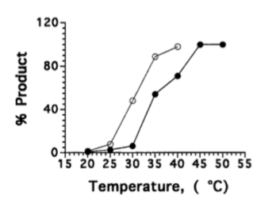

Aptamer
Aptamers, the combination of two words, “aptus” in Latin and “meros”
in Greece, meaning “fit” and “part” respectively, are short oligonucleotides or peptides with
specific sequences that allow them to bind to corresponding molecules. Usually, these sequences
will form unique 3-dimensional structures, like helixes or loops, which brings aptamers
specificity and affinity. Aptamers can bind to their target molecules and therefore changes the
target’s original structure, which can activate or inhibit the target’s function, which is
crucial in a microscopic system. Aptamer, compared to other specific reagents, is cheaper and
easier to select.
A technique called "SELEX" (systematic evolution of ligands by
exponential enrichment), is a process that can select the fittest DNA strand for a target
molecule from oligonucleotide bank.[1] By repeatedly retaining substrate-bound aptamer and
eliminating free aptamer, the best aptamer candidate will be easily recognized because of
its large portion in the reagent.
An example of widely researched field concerning aptamers is the
relationship between aptamers and enzymes. A famous case is the researches concerning
thrombin, an enzyme that initiates coagulation. Specific aptamers are able to regulate its
enzymatic activity.[2] Another application of aptamer is riboswitch, in which bioengineers
regulate mRNA translation by binding aptamers to their untranslated regions(UTR).[3]
In some situations, aptamers control the function of enzymes; in
others, they serve as enzymes. The main project of our research focuses on the relationship
between polymerase and aptamers.
Nanoparticle and Biological Applications
Nanoparticles are particles with at least one dimension at
nanoscale(1nm-100nm). Nanoparticles are mostly prepared by bottom-up methods, in which
reagents are synthesized from solutions rather than bulk material. When a material is at such
small size, its physical properties become absolutely different.[4]
Nanoparticles are commonly applied in biotechnology due to their
diversified chemical properties. Since nanoparticles have larger surface areas so that
their catalytic activities are significant. This property makes nanoparticles able to
degrade harmful organic molecules, such as bacterial cell wall[5]. In addition,nanoparticles
can penetrate through cytoplasmic membranes, they are able to deliver drugs into cells[6].
Standard Model
In our project, we want to further investigate the interaction
between aptamers and nanoparticles, and we choose PCR as an experiment model to study
aptamer-enzyme interaction.
PCR, or polymerase chain reaction, is a procedure that is widely
used in biomedical fields to replicate a huge amount of desired DNA fragments. To further
investigate the relationship between aptamer, enzyme, and nanoparticle in our project, we
chose Taq polymerase as our model of enzyme and PCR as the working condition. The advantages
of this model are listed below:
1. PCR produces DNA products that are easier to evaluate than other compounds such as proteins.
2. PCR is a mature and standardized procedure; reaction conditions had been designed and optimized by scientists in the past.
3. A practical problem of PCR is non-specific binding product. When setting up PCR in room temperature, primers and amplify non-specific product. Our design also targets this problem and improves PCR efficiency.
Problem 1: Aptamer releases in high temperature
Aptamer can bind to protein at the low temperature stably. However,
its efficiency becomes weaker after the temperature rises. IT50 values (the temperature at
which 50% of the full-length product is formed in the hairpin extension assay) of
TQ21(a kind of taq polymerase targeting aptamer) itself is about 30.5 C. [2] Since the
working condition of PCR is at least 72℃, aptamer-only regulation is not so suitable to the
non-specific product problem.

Solution 1
The selectivity and efficiency of aptamer interacting with proteins
is largely affected by its stereoscopic structure and location. However, this property is
unstable in high temperatures. Nanoparticles are thermal and biologically stable. It has
been proved that nanoparticles enhance aptamer efficiency by aggregating them. [3] Thus,
aptamer-nanoparticle complexes are applied in our experiment aiming to improve regulation
efficiency against polymerase at higher temperatures.
Problem 2: The choice of appropriate nanomaterial
The evolution of nanomaterial has been going on for decades, and numerous
nanoparticles has been created. To reach different goals, corresponding nanomaterials are
used to optimize the result of experiment.
Solution 2
In our experiment, we choose graphene oxide as our nanoparticle
material. Graphene oxide is a single layer sheet of oxide, with a structure containing
oxygen functional groups, such as epoixdes, carboxylic groups and alcohols. The reasons why
we choose Graphene Oxide as Nanoparticle material are listed below:
1. Because of its chemical characteristics, like biocompatibility& hydrophilicity, [4] graphene oxide is not only less biotoxic, but also easier to dissolve into water.
2. It is easy to modulate and add functional groups onto graphene oxide compared with metal NPs or nano silica. [5] This advantage is important to us we want t aptamers to be modifies onto graphene oxide, which can act as our experiment materials.
3. Compared with nanogold or nanosilver particles, it is far cheaper.
Background
1. Zhuo, Z., et al., Recent Advances in SELEX Technology and Aptamer Applications in Biomedicine. Int J Mol Sci, 2017. 18(10).
2. Huang, S.S., et al., Gold nanoparticles modified with self-assembled hybrid monolayer of triblock aptamers as a photoreversible anticoagulant. J Control Release, 2016. 221: p. 9-17.
3. Garst, A.D., A.L. Edwards, and R.T. Batey, Riboswitches: structures and mechanisms. Cold Spring Harb Perspect Biol, 2011. 3(6).
4. P.Avouris, Graphene: Electronic and Photonic Properties and Devices Nano Letters,2010. 10, (11), 4285-4294.
5. H. H. Lara, et al, Bactericidal effect of silver nanoparticles against multidrug-resistant bacteria. World J. Microbiol. Biotechnol., 2010, 26, 615– 621.
6. Zhang, L. , Xia, J. , Zhao, Q. , Liu, L. and Zhang, Z., Functional Graphene Oxide as a Nanocarrier for Controlled Loading and Targeted Delivery of Mixed Anticancer Drugs. Small, 2010. 6: 537-544.
Problem & Solution
1. Śpibida, M., Krawczyk, B., Olszewski, M. et al. J Appl Genetics (2017) 58: 133.
2. Lin, Y., & Jayasena, S. D. (1997). Inhibition of multiple thermostable DNA
polymerases by a heterodimeric aptamer. Journal of Molecular Biology, 271(1),
100-111. doi:10.1006/jmbi.1997.1165
3. Y.C. Shiang, C.C. Huang, T.H. Wang, C.W. Chien, H.T. Chang, Adv. Funct. Mater. 20
(2010) 3175.
4. Wang, K., Ruan, J., Song, H. et al. Biocompatibility of Graphene Oxide Nanoscale
Res Lett (2011) 6: 8.
5. K. P. Loh, Q. Bao, G. Eda, M. Chhowalla, Graphene oxide as a chemically tunable
platform for optical applications Nat. Chem. 2010, 2, 1015 – 1024.